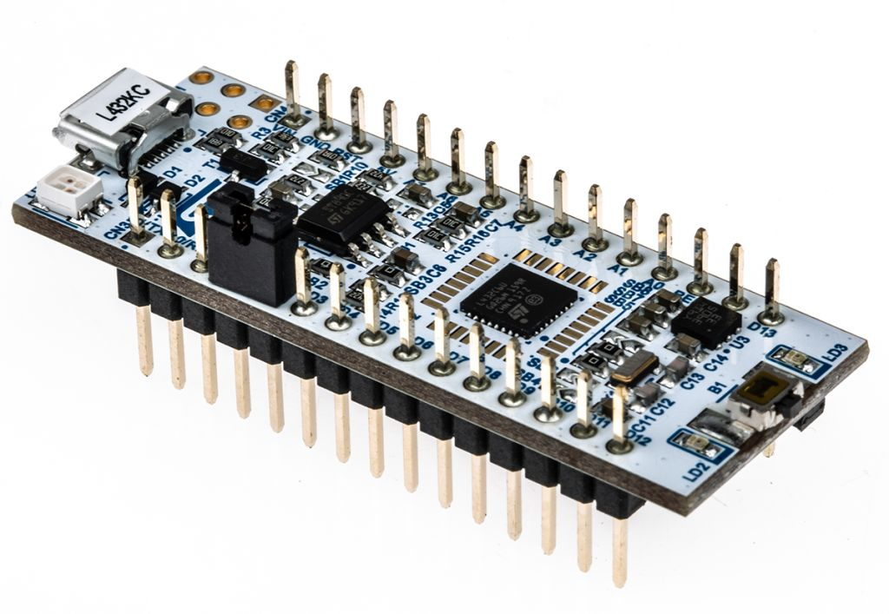
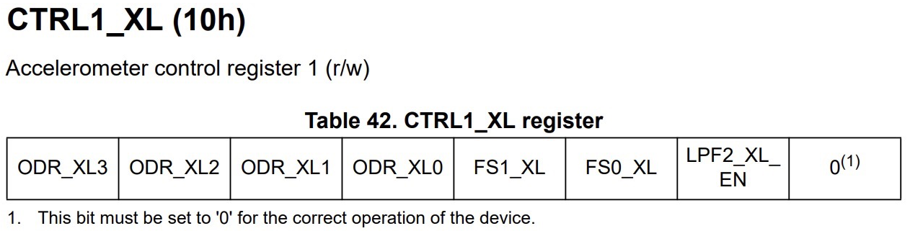
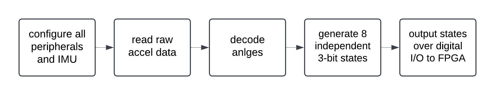
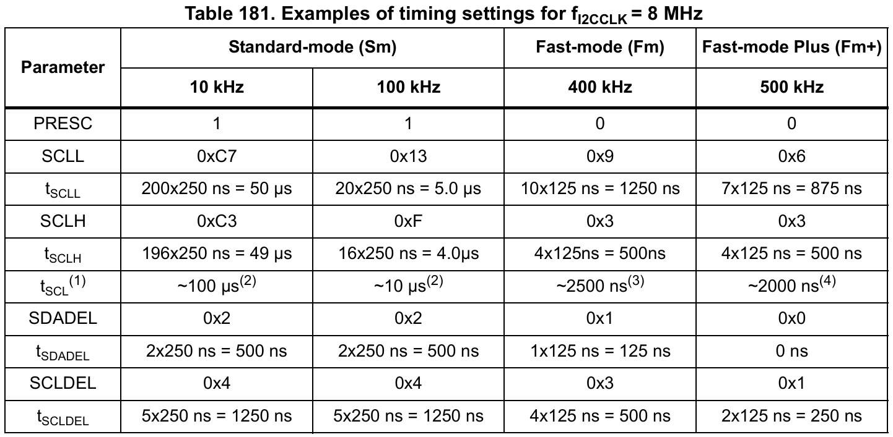
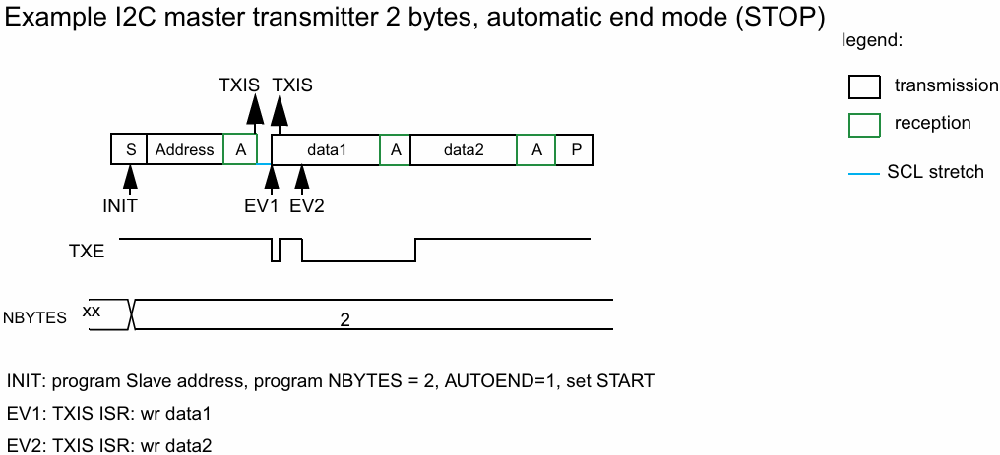
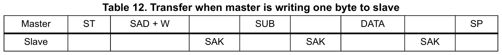
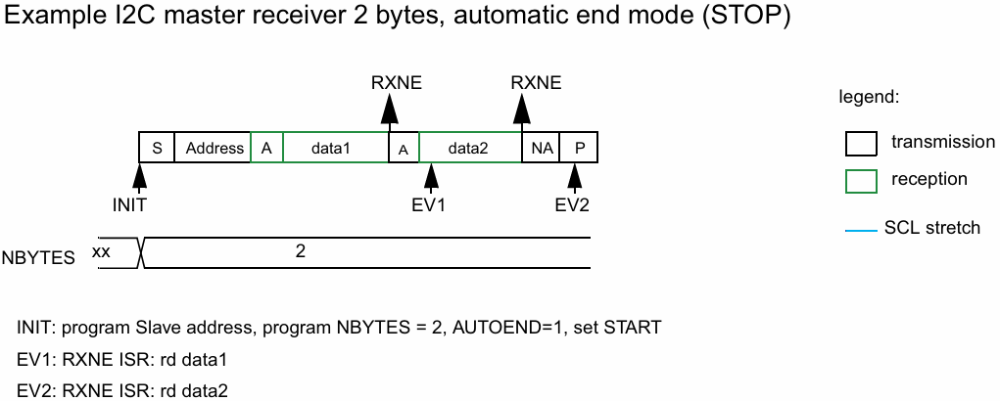
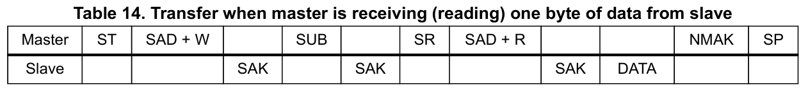
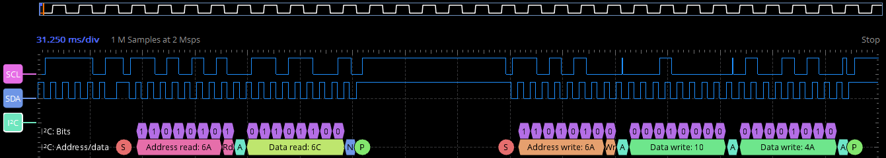
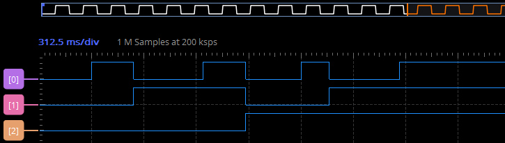

MCU Design
This project employs the STM32 Nucleo-32 board with an STM32L432KC MCU, facilitating direct I2C communication with three LSM6DSO32 IMUs from AdaFruit. The received data is converted into helpful information for the FPGA, and the generated data is sent to the FPGA via 3 digital outputs. On this page, I am focusing on the software side of the MCU system.

LSM6DSO32 IMUs
We selected these IMUs for their highly customizable accelerometer peripherals, I2C compatibility, and cost-effectiveness. In this project, the IMUs are mounted on the user’s shin, femur, and torso to measure angles. From these measurements, we also calculate the (X, Y) positions of the toe, heel, knee, hip, and head on a 2D plane. A subset of this data is then transmitted to the FPGA for further processing.

Addressing (I2C)
To fully take advantage of I2C, we chain together multiple IMUs on one I2C communication bus. The chip address must be changed on one of the chips to alter the LSB of the address value. The figure below highlights what needed to be bridged to achieve this configuration.

Configuring IMU Accelerometer
Configuration of the IMU accelerometer peripheral allows us to alter the communication speed, resolution, range, and other data parameters we receive. For our use, the CTRL1_XL register was configured with an ODR at 104Hz (normal mode), +/- 8g range, and enabled LPF2 data filtering.

MCU Peripherals & Programming Structure
As seen below in the block diagram, several key steps are involved in this process. First, all peripherals on the MCU were configured, as explained later, along with the CTRL1_XL register on each IMU. The angles of the ankle, knee, hip, and separately, the femur relative to the ground were decoded using simple trigonometry derived from the accelerometer axis magnitudes. Finally, a function was written to generate eight independent 3-bit states based on the femur’s angle relative to the ground, which were then output to the FPGA over digital I/O pins.

GPIOx (x=A,B)
The GPIO pins used correspond to the peripherals we are using (I2C1, I2C3, GPIOA, and GPIOB), which can be found in the STM32L432KC Datasheet under Table 14. After ensuring that all communication lines do not overlap and that all pins required by all peripherals are accessible, the configuration of each pin must take place. More on this later.
I2C1 & I2C3
I2C communication was used for this project for 2 reasons. As discussed in the Addressing (I2C) section above, I2C allows us to communicate with multiple chips on the same communication bus. This is a critical function for this implementation considering that we require 3 IMUs. Yet, our MCU only has 2 I2C peripherals, (I2C1 and I2C3). It is also noted that our IMUs only have 2 distinct configurable addresses, thus our I2C1 peripheral will communicate with the first 2 chips and I2C3 will communicate with the 3rd chip as seen in the MCU implementation circuit schematic above.
The implementation of I2C in general includes initialization, writing, and reading as explained below. Writing and reading will be used within initialization to configure and verify the proper function of the IMUs, while after such configuration is completed, our while loop will solely depend on the read function to gather data from all involved accelerometer registers in the accused IMU.
Initialization
First, I2C peripherals data and clock lines were configured in alternate function mode. The OSPEEDR registers were configured for high-speed GPIO functionality, to ensure proper data capture. The respective AFR registers must also be configured to correspond to I2C communication lines. The I2C initialization functions also configure the RCC registers to enable the I2C clock line to get the 8MHz MSI system clock.
Then comes the I2Cx (where x=1,3) configuration where bits and transmit interrupts are enabled. Configuration of the TIMINGR registers must also take place to ensure cohesive SCL speed between the MCU and IMUs, 100kHz standard mode was used for this project. As seen below in table 181, found in the STM32L432KC Reference Manual, all corresponding registers were configured to match that of the 100kHz standard mode.
After configuration, a WHO_AM_I register that holds a set known value exists in the IMU. Reading this register along with a brief check that the correct value is read, provides a gate for which the code can not pass unless I2C is functioning as expected. Allowing us to know if I2C communication is working correctly.
Writing With I2C
Writing to the IMU from the MCU over I2C follows the example waveform shown below, found in Figure 371 of the STM32L432KC Reference Manual


Reading With I2C
Reading from the IMU to the MCU over I2C follows the example waveform shown below, found in Figure 374 of the STM32L432KC Reference Manual

Simulation
Because during our initialization process of the I2C peripherals, where we read the WHO_AM_I register and halt the program if data is not read correctly, we could assume that I2C operates correctly. During the debug process, the ADALM2000 Logic Analyzer was used to view communication traces. Below is shown an example trace including reading of the WHO_AM_I register, and configuring the CTRL1_XL accelerometer control register on the IMU.

Output States
A combination of 8 different output states via 3 digital output pins was used to communicate squat depth with the FPGA. Pins PA0, PB3, and PB5 were configured as output pins, and a simple function was written to output different states based on the value of the angle of the femur as compared to the parallel. This allows the character on the screen to reflect squat depth, and reach the bottom of the squat when the user’s quad is parallel with the ground.
Simulation
The simulation below reflects the 3-pin analog output states as the femur IMU is rotated from verticle to 90 degrees, simulating a squat motion for that leg segment. As seen, there exist 8 clear states.

End State
This implementation successfully provided accurate readings and correctly outputs analog states derived from IMU data, effectively simulating the progress and status of a squat.